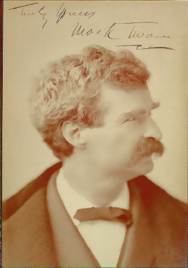

Mark Twain in His Times
An Electronic Archive
The Electronic Text Center
University of Virginia
Written and Directed by Stephen Railton,
Department of English, University of Virginia
Produced by David Seaman,
Electronic Text Center, University of Virginia
Filmed almost entirely on location at the Special Collections
Department, University of Virginia